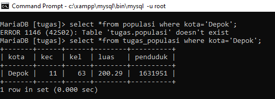

Tugas 8 MySQL
1.Tampilkan kolom kota, kec, luas dan penduduk!
2.Tampilkan kolom kota kemudian ubah namanya menjadi Nama Kota, kolom kec menjadi Jumlah Kecamatan dan kolom kel menjadi Jumlah Kelurahan!

3.Tampilkan data dari table tugas_populasi berdasarkan Kecamatan dari jumlah terbesar!
4.Urutkan berdasarkan kolom kel lalu diambil 5 data setelah baris ke-2!

5.Tampilkan data dimana kolom kota berisi string Depok!

6.Tuliskan query untuk menampilkan hasil berikut
7.Tampilkan isi tabel populasi dimana nilai kolom kecamatan antara 20 dan 30